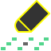

Comment utiliser le Sequencer?
Commandes
Volume
Vous permet de contrôler le volume de la séquence.
Le volume est indépendant du reste de Concerto
Glissez de haut en bas pour ajuster la valeur
La valeur va de -30 DB à +6 DB
Double-cliquez pour remettre la valeur par défaut (+0 DB)
Clavier
Vous permet d'enregister une mélodie personnalisée.
Plus vous touchez à droite, plus la note sera aigue.
Plus vous touchez en haut, plus la note sera forte.
Plus vous touchez longtemps, plus la note durera longtemps.
Ouvrir
Vous permet d'ouvrir une séquence préparée d'avance.
Maintenez pour ouvrir le menu et relâchez pour choisir
Les choix sont:
Mountain King contient les mesures 1-4 et 9-12 de In the Hall of the Mountain King par Edvard Grieg.
- tempo : 100 bpm
- signature temporelle : 4 / 4
- clé : A#0
- onde (instrument) :
Chevauchée des Walkyries contient les mesures 9-19 de Der Walkürenritt par Richard Wagner.
- tempo : 132 bpm
- signature temporelle : 9 / 8
- clé : A#1
- onde (instrument) :
Séquence vide est une séquence vierge. La musique vous appartient!
- tempo : 120 bpm
- signature temporelle : 4 / 4
- clé : C1
- onde (instrument) :
Recharger
Vous permet de remettre par défaut les paramètres de la séquence sélectionnée.
Info
Vous permet de lire cette superbe page.
Jouer / arrêt
Vous permet de jouer ou d'arrêter la mélodie avec les paramètres établis.
Cliquez sur pour démarrer la séquence.
Cliquez sur pour arrêter la séquence.
La séquence joue pendant 4 mesures
Tempo

Vous permet d'ajuster la vitesse de défilement de la mélodie.
Glissez de haut en bas pour ajuster la valeur
La valeur va de 1 à 480
Double-cliquez pour remettre la valeur par défaut (120)
Signature temporelle
Vous permet de modifier la signature temporelle de la séquence.
Numérateur
Détermine le nombre de battements dans une mesure.
Glissez de haut en bas pour ajuster la valeur
La valeur va de 1 à 32
Double-cliquez pour remettre la valeur par défaut (4)
Dénominateur
Détermine la durée d'un battement
1/16 : court
1/1 : long).
Maintenez pour ouvrir le menu et relâchez pour choisir
Les choix sont:
- 16
- 8
- 4
- 2
- 1
La valeur par défaut est 4
Clé

Vous permet de modifier la clé de votre séquence.
Note
Détermine la hauteur de la note de départ.
Maintenez pour ouvrir le menu et relâchez pour choisir
Les choix sont:
- C (Do)
- C# (Do#)
- D (Ré)
- D# (Ré#)
- E (Mi)
- F (Fa)
- F# (Fa#)
- G (Sol)
- G# (Sol#)
- A (La)
- A# (La#)
- B (Si)
La valeur par défaut est C
Octave
Détermine l'octave de la clé.
Un octave vaut 7 notes (en hauteur)
Maintenez pour ouvrir le menu et relâchez pour choisir
Les choix sont:
- -2
- -1
- 0
- 1
- 2
- 3
- 4
La valeur par défaut est 1
Onde (instrument)
Vous permet de choisir l'onde (ou l'instrument) que la séquence produira.
Maintenez pour ouvrir le menu et relâchez pour choisir
Les choix sont:
La valeur par défaut est
Effacer 1
Vous permet d'effacer une note lorsqu'elle joue.
Effacer tout
Vous permet d'effacer toutes les notes de la mélodie.
Les paramètres établis ne changeront pas